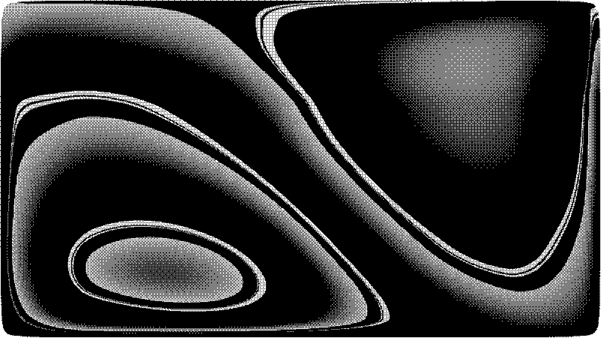
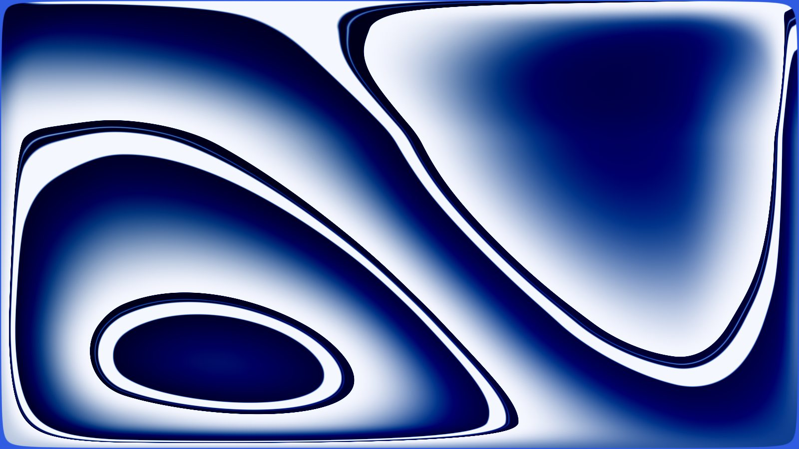
Turboslide
A slides editor with Google Slides' menus, toolbar and shortcuts, a canvas on every slide, and a PowerPoint export that matches the screen pixel for pixel.
No account. Open source under the MIT licence. Hosted at turboslide.vercel.app.
hero: paper:liquid-metal, frame 5500 ms, two tone at 2 px cells, 1-bit PNG 1600 by 900, backend native (crates/turboslide-native)live after first paint: the same recipe on ShaderMount, brand blue preset; still under prefers-reduced-motion
actions, one table for the click, the CLI, MCP and the API
packages/schema/src/actions.ts
layouts, Google's eleven first and the ten GT layouts after them
packages/schema layouts
shape presets drawn from the PowerPoint geometry
shapes/definitions.ts
worst page mismatch on the 170 page export of the GT deck
docs/pptx.md, 2026-09-11
shader materials with typed controls
packages/materials catalog
licence, with the code on GitHub
LICENSE
Google Slides' frame, on every slide a canvas
The same shellThe same menus, toolbar, filmstrip, speaker notes and right click menus, in Google's order, with Google's shortcuts. An item Turboslide does not have is in its place, disabled, with one sentence on what to do instead.
Every object movesEvery object drags, resizes, rotates, groups and reorders. The first drag on a slide converts it to a canvas without moving a pixel, and one undo puts the layout back.
One lookInter, paper and ink, one pixel rules, a light and a dark appearance that the stage, the thumbnails, the slideshow and every download follow.
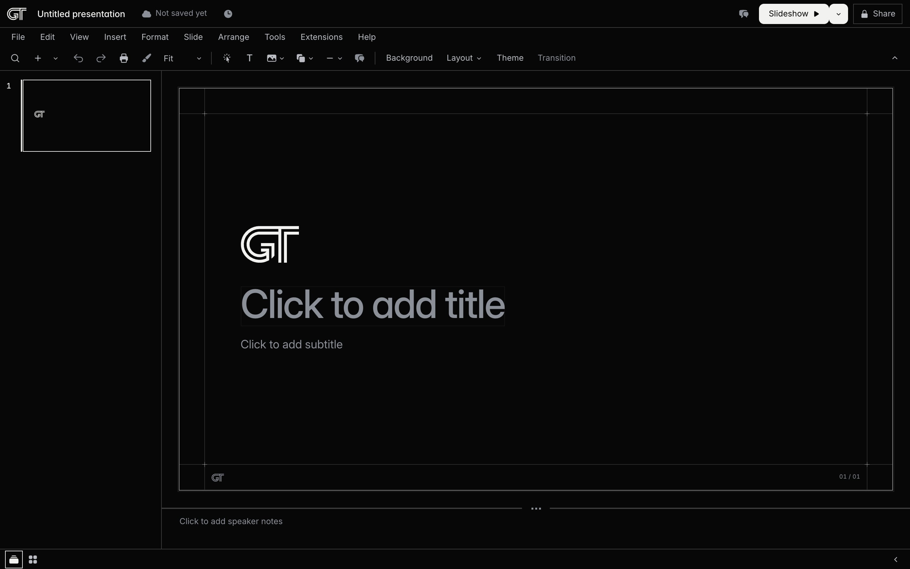
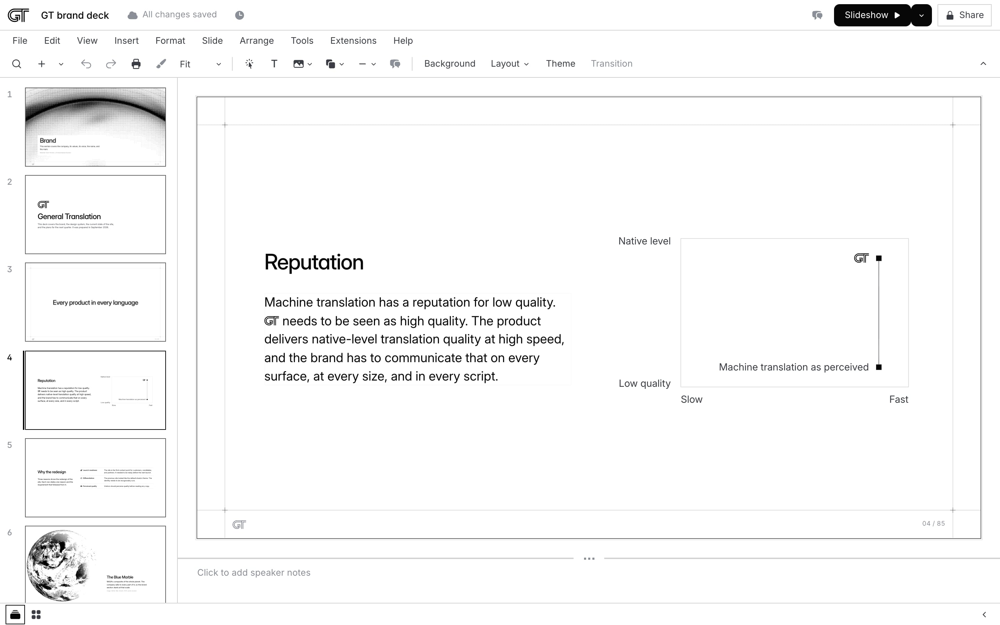
What it does
Twelve groups, in the order of the README's feature tour. Every card names a thing the studio does today on turboslide.vercel.app.
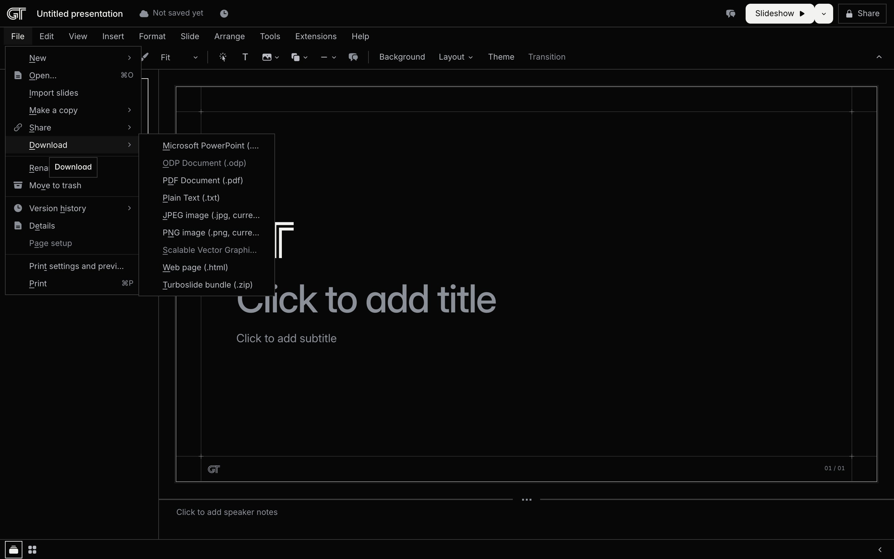
The Google Slides shell
Ten menus, a toolbar whose tail follows the selection, the filmstrip, the notes pane, the right panels and the bottom bar. Search the menus finds every item by name, and every control carries its name and its key.
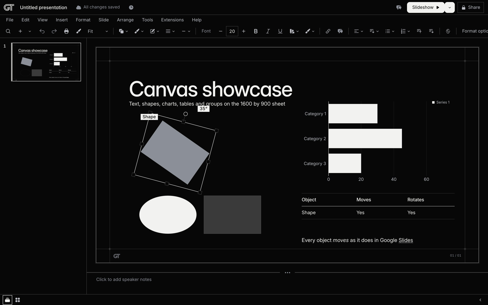
The canvas
Drag, resize and rotate with live readouts. Snap guides, rulers, guides, zoom to 1600 percent, marquee selection, z order, groups, crop mode and connectors that follow the shape they are attached to.
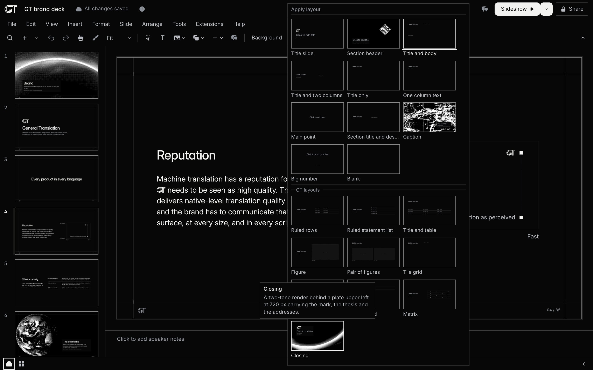
Layouts and themes
Twenty one layouts in one grid: Google's eleven and the ten GT layouts. Apply layout keeps the content and never refuses. A new presentation opens on a Title slide with four starter pictures already in it.
Text
Bold, italic, underline, strikethrough, super and subscript, colour and highlight on a range. Lists with nine bullet and six numbering presets, line spacing, columns, indents, alignment, autofit, find and replace across the deck, links to a URL or a slide.
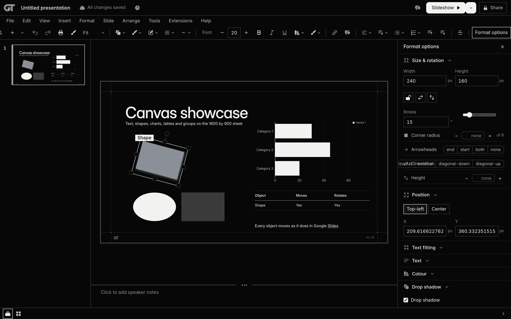
Objects, pictures and materials
135 shapes in Google's four categories, seven line kinds with ten end decorations, fills, borders, dashes and shadows. Pictures upload, crop, mask to any shape and adjust. Seventeen shader materials play live on the stage, and a photograph becomes a two tone dither in one step.
Tables
A hover grid up to 20 by 20. Insert and delete rows and columns, merge and unmerge, distribute, header rows, cell fills and borders. Tab moves between cells. The editable export writes a real PowerPoint table.
Charts and diagrams
Bar, column, line and pie charts with a data grid in the panel, up to 12 categories and 6 series. Six diagram templates in three styles insert as a group you edit like any other.
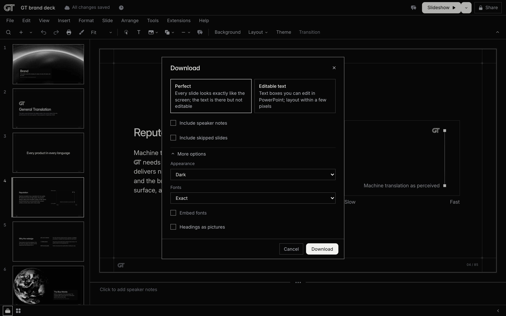
Exports
Perfect PowerPoint by default: each page is the rendered slide over searchable text, checked against the screen before the file is written. Editable text PowerPoint, PDF, a single web page, plain text, JPEG and PNG beside it.
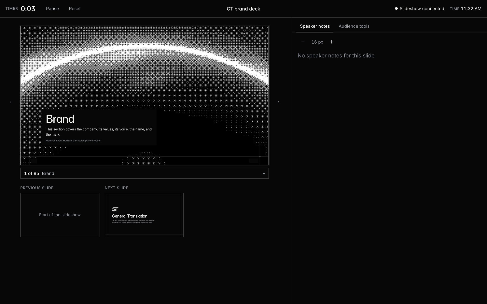
Present
Slideshow from the current slide, Presenter view in a second window with the timer, the notes and the next slide, Google's presenting keys, a laser pointer, and a present link you can send.
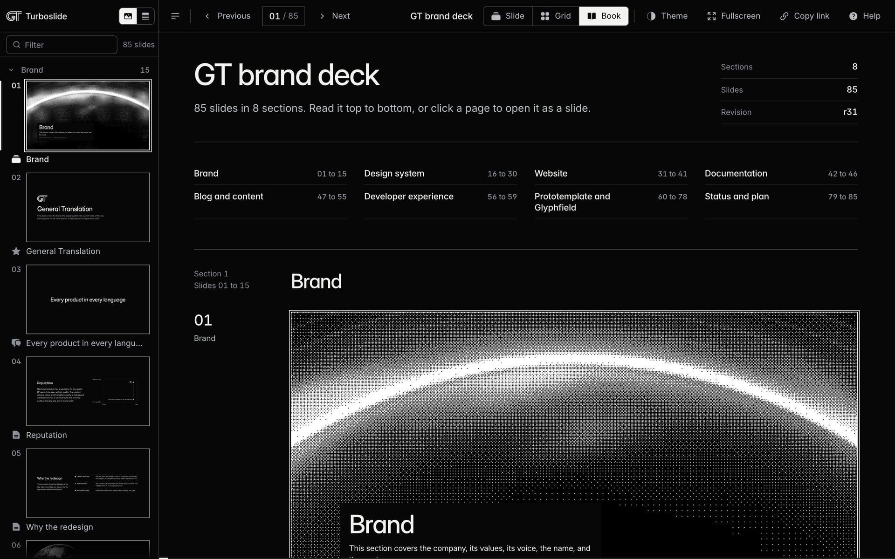
The viewer and sharing
A read only link with Slide, Grid and Book views, an embed for any site, and a Share dialog with the view, present and edit links. Skipped slides and speaker notes stay out of what you share unless you ask.
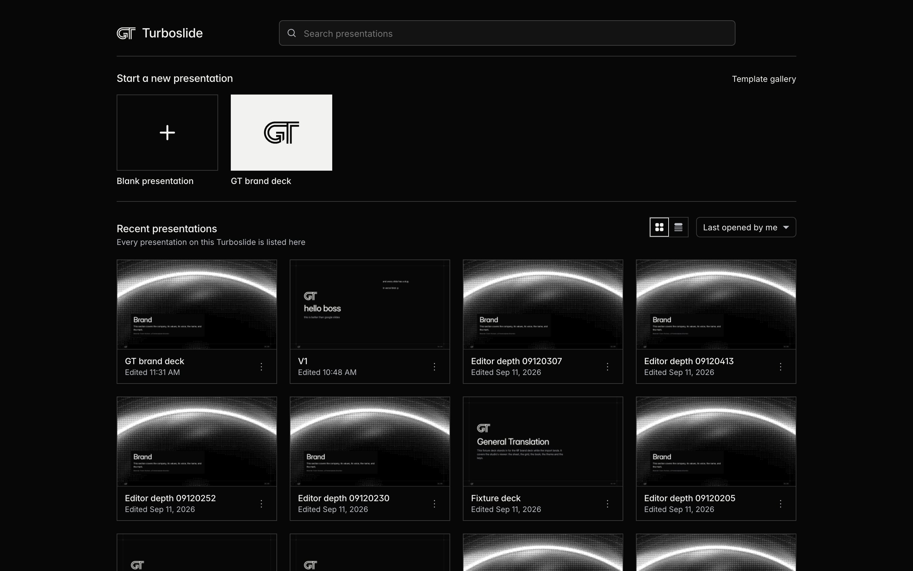
Home and files
Recent presentations as cards with thumbnails, Make a copy, Rename, Move to trash with Undo, Import slides from another presentation, Version history with named versions, and a bundle you can download and upload.
Quality gates
Fifty five grammar rules check overflow, contrast, type sizes and copy in both themes, with Fix for the mechanical ones. A 25 step acceptance chain and a 2,100 row parity audit run before anything ships.
Dithers and shaders, from the deck to the interface
The GT brand deck draws its photographs as two tone dithers: an eight by eight Bayer screen at two pixel cells, cut from a toned and cropped picture, with a light twin that is the exact inverse of the dark one. The same pipeline made this page's hero from a shader frame.
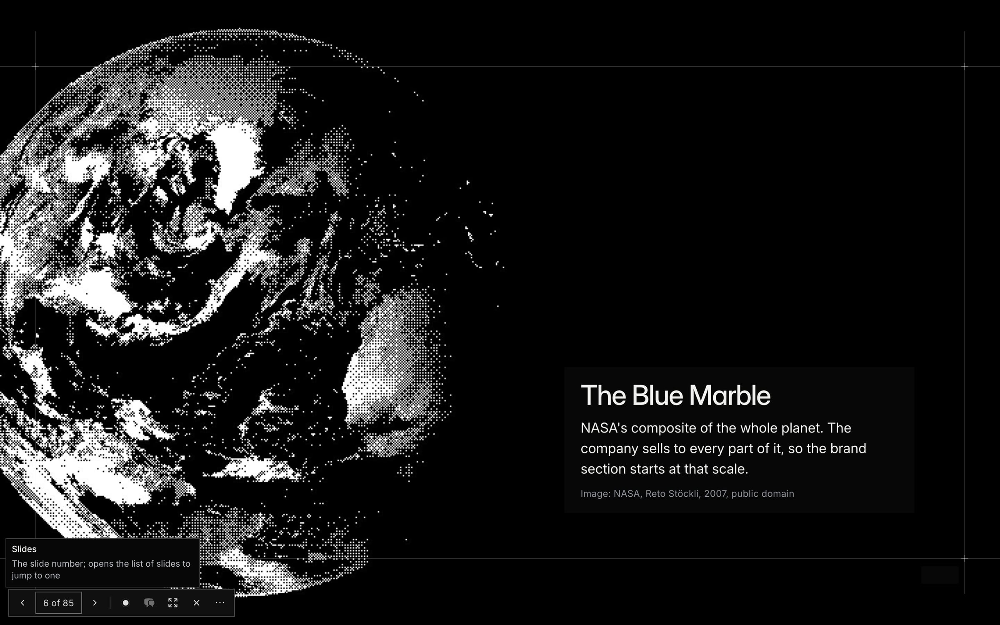
One arithmetic, three placesThe pipeline runs on any photograph or on a frozen frame of a shader material, reports how clear the plate stays, and is written three times with one arithmetic: in TypeScript, in a Rust addon for Node and in a Rust module for the browser, with a test that proves the three light the same cells.
Seventeen live materialsSeventeen Paper Shaders materials play live on the stage with typed controls and the GT palette presets, and every one is captured as frozen frames for the thumbnails and the exports.
Where the identity uses themThe mark's right panel, this hero, the empty states, the loading texture and the social image are dithers from this pipeline. Menus, controls, text, icons and the customer's slides never carry one.
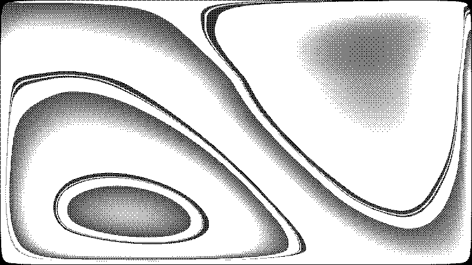
No presentations yet
Start one above, or open the GT brand deck as a template.
Loading
The curtain: the figure twin at integer cells while the sheet is not ready, with the ramp as the progress texture. The threshold map is fixed; the value moves.
Anonymous authors
An author without a name is a 24 px square of Bayer tiers keyed by a hash of the author id: two colours, no face, the name in words beside it.
agent:run-7f3a, studio, agent:run-c21d
Why it is fast
Most of the speed is structural: one renderer, contracts generated ahead of time, immutable documents and caches, and export work that runs where the browser already is. The numbers below are measured, and each one names the file or report that produced it.
One renderer
One function turns a slide into the same HTML and CSS for the editor, the viewer, the embed, the CLI's screenshots and the exporters. A render at one revision is the same pixels on every surface, so nothing is drawn twice and nothing has to be reconciled.
packages/render/src/slide.ts; VERIFICATION-2 section 2, 2026-09-12
Contracts generated once
Every operation is one entry in one table. The CLI parsers, the MCP tools, the HTTP contract, the window API list and the skills are generated from it and committed, so describing the API costs nothing per request and a stale copy fails the build.
packages/agent/generated, counted 2026-09-13
Rust where the arithmetic must not drift
The dither and image comparison pipeline is a Rust crate compiled to a Node addon and to WebAssembly, with a TypeScript copy of the same arithmetic where neither is built. The crate exists so that a dither approved in the browser and one produced on a server light the same cells; where the addon is built it also cuts a screen in less than half the time. The hosted function runs the TypeScript stages today.
docs/native.md, a 1600 by 900 screen, 2026-09-10
The export is a screenshot
Perfect PowerPoint rasterises each page in Chromium at twice the sheet size, stores it in the smallest encoding that decodes within budget, then decodes it again and compares it with the shot before the file is written. The page is the screen, and there is no second layout engine to disagree with it.
docs/pptx.md; docs/HOSTED-STATUS.md, 2026-09-11
Export in batches
On the hosted studio a long deck exports in batches of sixty slides, each one function call, with a progress sentence and a merge at the end. A failed batch is retried on its own; the file is never started over.
docs/hosting.md section 7, 2026-09-11
Compute that lasts
The export and render routes run on Vercel functions with an 800 second budget and 3,009 MB of memory, on fluid compute, so several requests to one deployment share one warm process and a render never waits for a cold start when the process is already up.
apps/studio/vite.deploy.config.ts
Routes load before the click
The router preloads a route's code and data as soon as the pointer reaches its link, so the move from the home page to a presentation starts before the click lands. Every control inside the editor paints its result in the same frame.
research-4/04-performance-baseline.md, production, 2026-09-13
Immutable documents and caches
Every committed write stores the whole document under the hash of its bytes, so a reader proves it has the current document from one header and fetches no slide it already holds. Thumbnails named by revision are cached for a year, and the GT deck's pictures are static files on the CDN that answer before the function runs.
research-4/04 section 6.2, 77 CDN hits
What is still slow is measured too: the deck list behind the home page answers in 2.8 s at the median and 8.7 s at the worst, a thumbnail that is not cached takes 2.4 to 3.8 s after a save, and the hosted function runs the pipeline's TypeScript stages because no Rust build ships with the deploy. Those numbers are this round's targets.
For agents
Every capability of the editor is an action. The same 105 actions run on the CLI, over MCP, over HTTP and inside an open page, through one validator, and every write names the revision it read.
CLI
Edits a decks folder with no browser page; --json gives machine output and --base-revision names the revision the write read.
pnpm exec turboslide slide new --layout split --after title --deck decks/gt-brand --jsonMCP
One deck_<action> tool per action over stdio or streamable HTTP, with render tools that return PNGs and the deck_review prompt for the judge lenses.
pnpm exec turboslide mcp --deck decks/gt-brand
POST https://turboslide.vercel.app/mcp?deck=gt-brand (with a bearer token)HTTP
One JSON object in, the normalized result and its findings out; a stale revision is 409 with the current document.
curl -X POST 'https://turboslide.vercel.app/api/actions/deck.info?deck=gt-brand' \
-H 'authorization: Bearer $TURBOSLIDE_TOKEN' -H 'content-type: application/json' -d '{}'Window API
Inside an open editor, viewer or presenter page, the same actions run through the same dispatcher a click uses.
window.turboslide.studio.invoke('view.goto', { slideId: 'thesis' })OpenAPI
The OpenAPI 3.1 document, the manifest and the llms guides are generated from the action table and committed.
packages/agent/generated/openapi.json on GitHub today
GET https://turboslide.vercel.app/openapi.json once the round bundles itSkills
Four skills with generated reference tables: discovery and the write protocol, writing slides in the grammar, driving the live page, verifying.
skills/turboslide-api skills/turboslide-create skills/turboslide-studio skills/turboslide-verifyThe hosted agent routes accept a bearer token set by the deployment's owner; a checkout serves them to localhost without one. A deck moves between a checkout and the hosted studio with turboslide deck push and deck pull.
Compared with Google Slides
Turboslide follows Google Slides' structure and behaviours on purpose, so the differences are the point. Google Slides is a product of Google LLC; Turboslide is not affiliated with Google.
| Google Slides | Turboslide | |
|---|---|---|
| Account | A Google account; the product page's calls to action are Sign in and Try Slides for work. | No account. Anyone with a link opens it; the store is shared. |
| Where the file lives | Google Drive. | A folder in a checkout, or a Vercel Blob store on the hosted studio, with one immutable copy per revision. |
| Editing together | Real time co editing with live pointers, comments, assignments and a comments panel. | One editor holds a ten minute lease on the slide it edits; another writer's change arrives within a second with a banner. No comments yet. |
| Export | PowerPoint, ODP, PDF, plain text, JPEG, PNG and SVG of the current slide. | PowerPoint in two modes, one pixel identical to the screen with a report; PDF, one file web page, plain text, JPEG, PNG and the Turboslide bundle. No ODP or SVG. |
| Import | PowerPoint and Canva files; Import slides from another presentation. | Import slides from a presentation on this studio; open a Turboslide bundle. No PowerPoint import yet. |
| Automation | A REST API with presentations.get and batchUpdate, Apps Script and add-ons; the developer site lists an MCP server. | 105 actions on the CLI, MCP, HTTP and the window API, generated from one table with an OpenAPI document and four skills. |
| Layouts and themes | Many themes and templates; eleven predefined layouts per theme. | One theme, gt-ink-paper, with Google's eleven layouts and ten GT layouts. |
| Pictures | Stock and web images, Drive and Photos, GIFs and stickers, Gemini image generation. | Upload, URL or this presentation; crop, mask, adjust; two tone dithers and seventeen shader materials. |
| Transitions | Slide transitions and object animations. | None; the Transition item is present and disabled with a sentence. |
| Presenting | Slideshow, Presenter view, present from Meet, recording. | Slideshow, Presenter view in a second window, Google's keys, a present link. |
| Offline | With the Docs Offline extension in Chrome or Edge. | The slideshow keeps running after load; the editor needs the server. |
| Licence and hosting | Part of Google Workspace. | MIT; run it from a checkout or deploy it to Vercel. |